LES REGLE DU SNAKY
- Comment jouer
Pour contrôler le serpent utilisez les flèches directionnelles.
- Les règles
Pour gagner des points et faire grandir votre serpent, mangez les fruits qui apparaissent à l'écran. Attention ! la partie prend fin si la tête de votre serpent entre en contact : avec le reste de son corps ou un obstacle.
Appuyez sur échappe pour mettre le jeu en pause.
- Plusieurs modes de jeu sont disponibles :
- Mode Ouvert
Il s'agit du mode de jeu classique. Dans ce mode, il vous est possible de vous déplacer librement sur le terrain et ainsi de passer d'un bord de l'écran à l'autre.
| 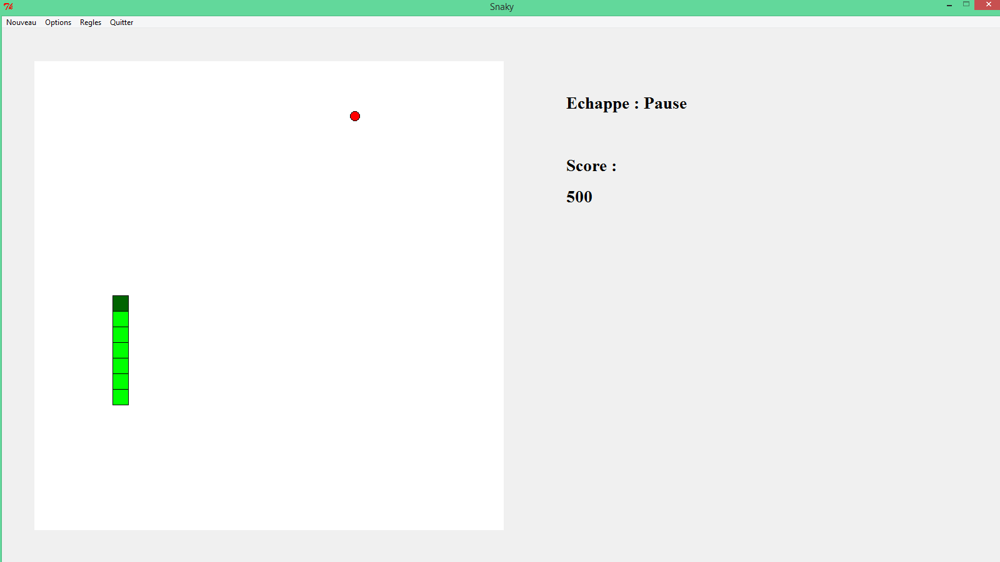 |
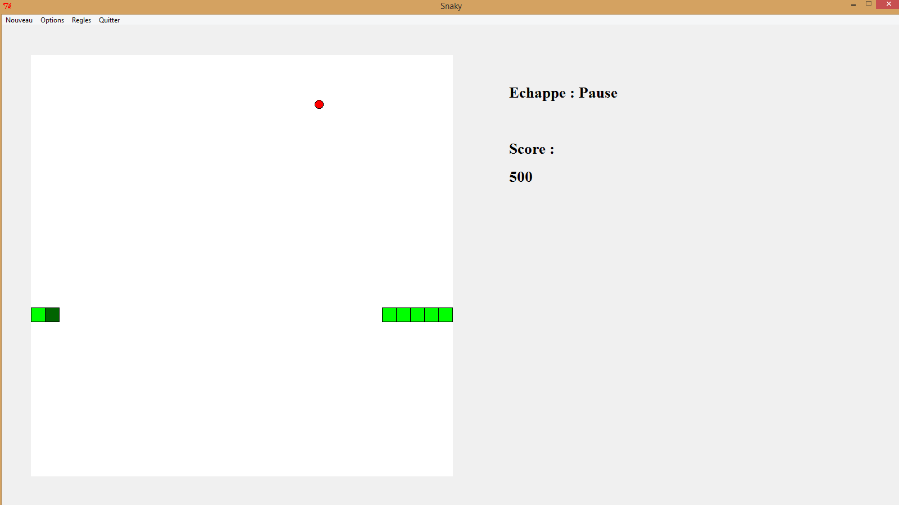 |
| Le terrain du mode ouvert |
Passage du bord droit au bord gauche |
- Mode Fermé
Dans ce mode, vous vous retrouvez enfermé dans un carré dont vous ne pouvez pas vous échapper et tout contact avec une des bordures vous fera perdre la partie.
| 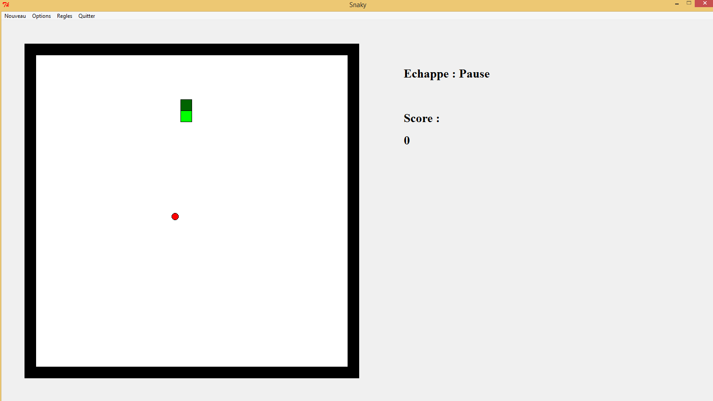 |
| Le terrain du mode fermé |
- Mode Labyrinthe
Dans ce mode, il y a plusieurs terrains apparaissant aléatoirement à chaque partie. Chaque terrain est composé d'obstacles infranchissables. Cependant, si aucun obstacle n'est présent sur une bordure vous pouvez la traverser comme dans le mode ouvert.
| 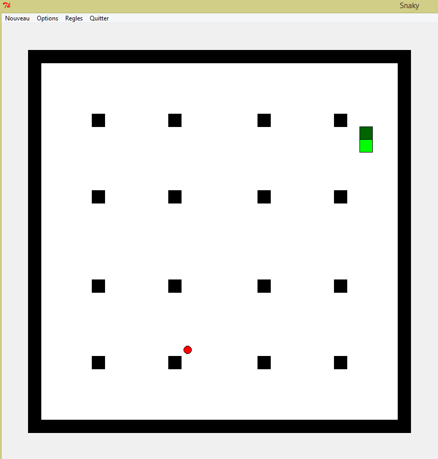 |
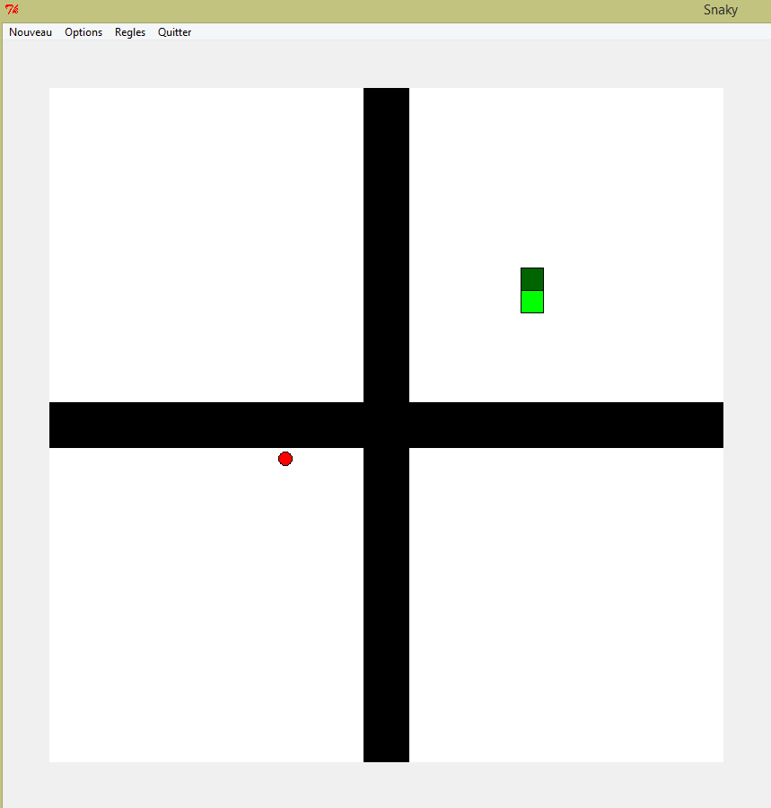 |
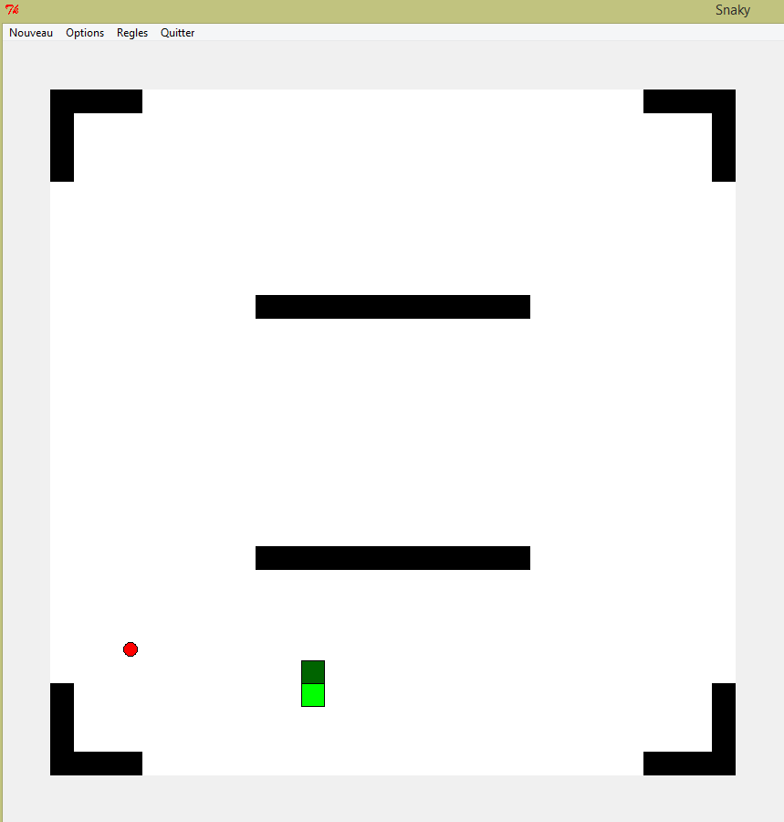 |
| 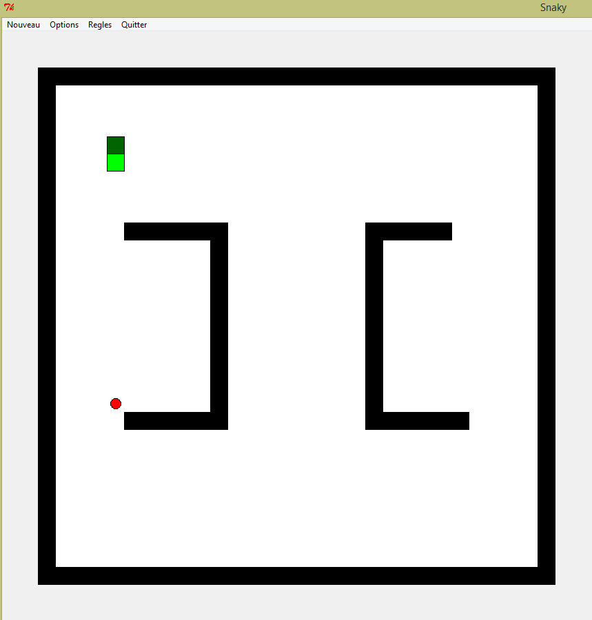 |
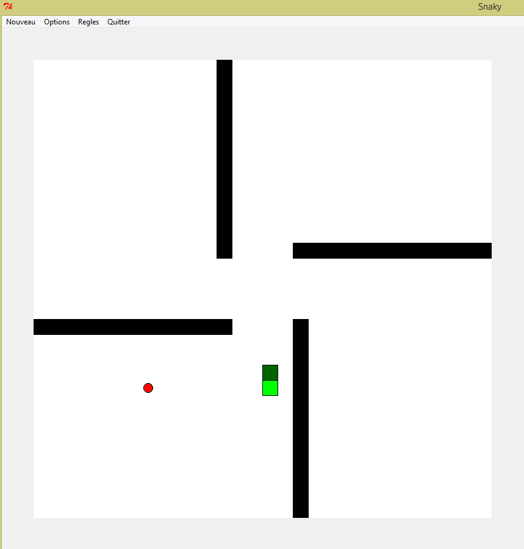 |
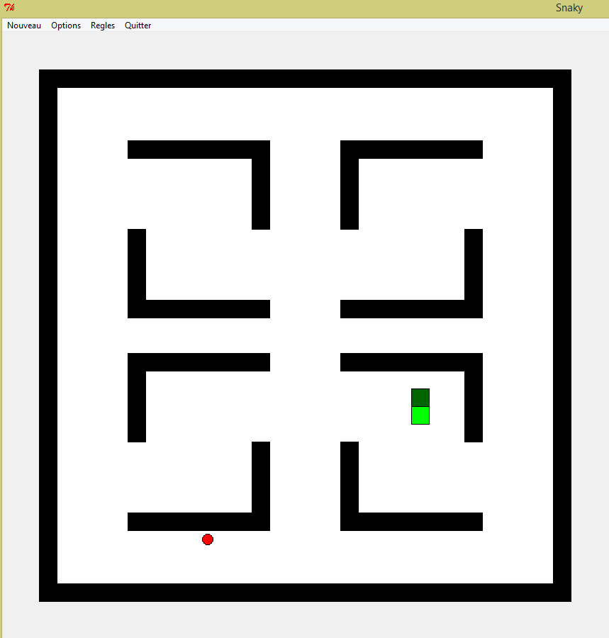 |
| Les différents terrains du mode labyrinthe |
- Difficulté
Il vous est possible de changer le niveau de difficulté du jeu. Vous avez le choix entre trois niveaux de difficulté : facile (vitesse lente), normal (vitesse moyenne) et difficile (vitesse rapide), la difficulté normale étant définie par défaut.
- Personnalisation
Vous pouvez aussi personnaliser la couleur de votre serpent. 3 couleurs sont disponibles : vert, bleu et rouge, la couleur verte étant définie par défaut.
| 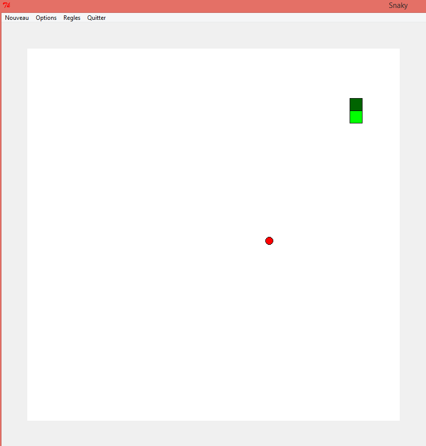 |
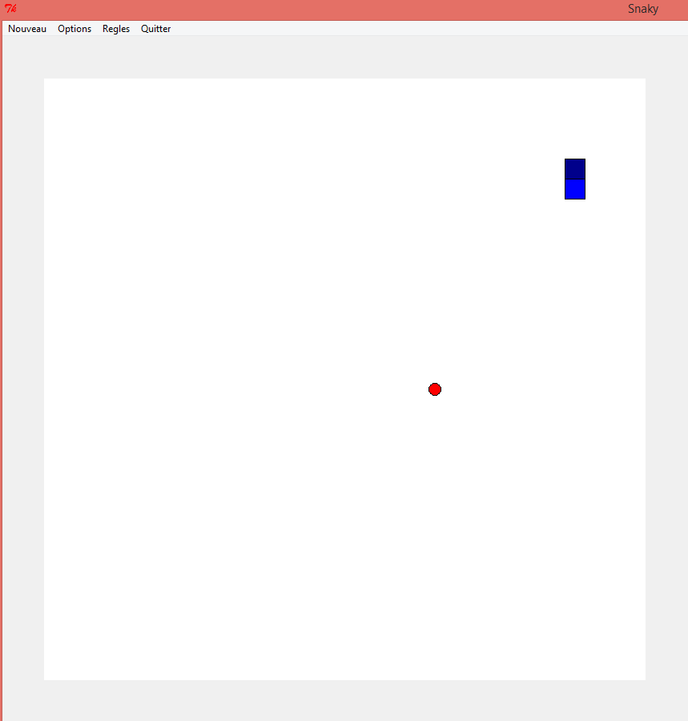 |
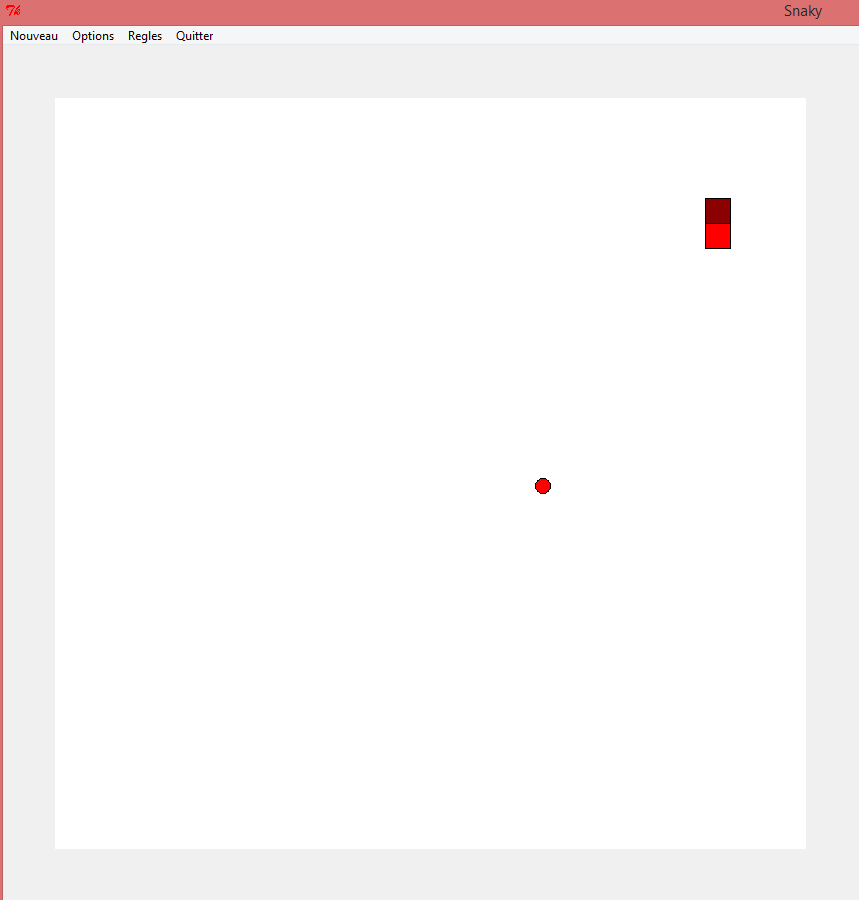 |
| Les 3 couleurs en jeu |
Retour en haut de page